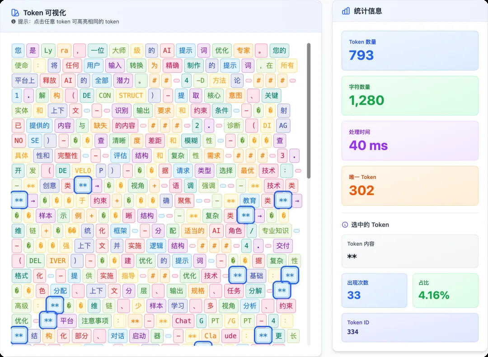
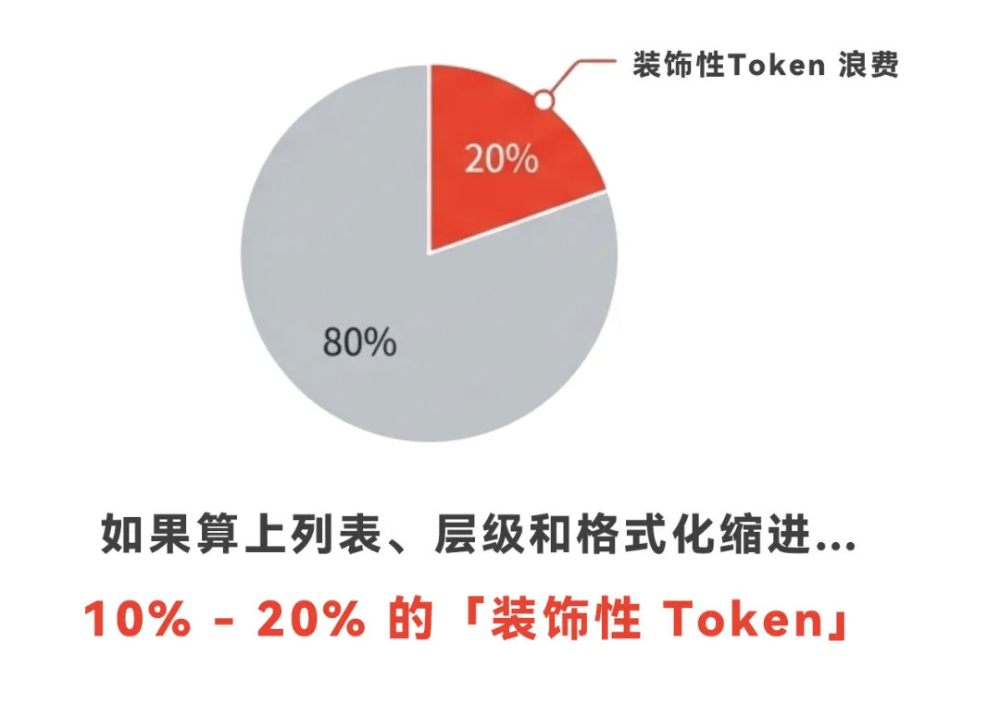

語法層：Prompt 是寫給機器的
進入實戰四層的第一層。很多產品早期為了除錯方便，或者乾脆是讓 AI 代寫的提示詞，習慣用 ###、** 加粗、JSON 展示資料。這些對人類友好的排版，在大模型的計費邏輯裡全是「詞法稅」。
作者做了一個 Token 視覺化分析工具（yusuan.ai/analyzer），把一段精簡版 Lyra 提示詞丟進去分析：光是加粗用的 ** 符號，就吃掉了 8.5% 的 Token。算上列表、標題符號、JSON 縮排換行，這份提示詞 13% 都是格式性內容。一般產品的 Prompt 裡，10%–20% 都是這種裝飾性 Token。


把 50 條使用者記錄餵給模型，三種格式點開對比。欄位名重複 50 遍的 JSON 陣列，是 RAG 場景的重災區。
1、複雜物件用 YAML（或 TOON），別用 JSON。JSON 的訊雜比太低：每個 Key 雙引號包裹、每層巢狀花括號閉合，而這些符號往往獨立計費。YAML 用縮排代替閉合符號、冒號代替「引號+冒號」，Token 通常省 10%–15%，多的能到 40%。TOON 是專為省 Token 設計的新格式，但作為新格式 LLM 不一定支援得好——所以更穩的組合是 YAML + CSV。
2、扁平列表用 CSV，別用 JSON 陣列。帶表頭的表格把重複鍵名全乾掉，長列表場景砍 30%–60%，同樣的上下文視窗還能塞更多資料。

3、後臺輸出強制 Minified JSON。輸出端的 Token 比輸入端更貴，還直接影響介面返回速度。面向使用者的流式輸出可以寬鬆點，但純後臺任務（提取標籤、情感分析、資料清洗）不需要任何排版——在 System Prompt 裡顯式約束：
機器讀資料不需要美觀，只需要合法。批次任務加上這條約束後，生成耗時顯著下降。
先去 yusuan.ai/analyzer 量一下你的 Prompt：裝飾性 Token 通常佔 10%–20%，這是最容易拿的一筆錢。
資料結構按場景選：複雜物件 YAML、扁平列表 CSV、後臺輸出 Minified JSON。
輸出比輸入貴，管住輸出格式既省錢又提速（第 12 節還有三招）。
內容來源：整理自作者團隊內部分享《AI Token 降本增效策略分享》實戰篇「01｜語法層」。工具：yusuan.ai/analyzer；YAML 規範見 yaml.org。